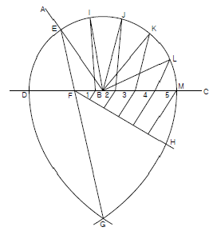
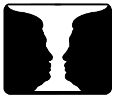
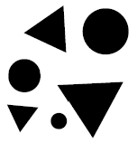
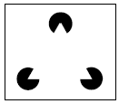
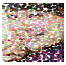
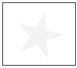
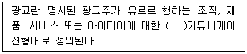
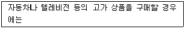

시각디자인기사 (2007-05-13 기출문제)
1과목: 시각디자인론
1. 19세기 후반 영국의 모리스가 주창했던 것은?
- 구성주의
- 기능주의
- 미술공예운동
- 분리파
(정답률: 알수없음)

2. 디자인 방법론에 대한 설명으로 가장 적절한 것은?
- 일러스트레이션의 표현 및 묘사방법
- 디자인 과정의 과학적이고 효율적인 전개방법
- 표현재료의 선정 및 사용방법에 대한 고려
- 컨셉 과정부터 최종 완성까지의 작업과정
(정답률: 알수없음)
3. 실제 인간이나 동물의 움직임을 디지털 코드화하여 3D 캐릭터에 적용시키는 방식을 의미하는 용어는?
- 디포메이션
- 스켈톤 애니메이션
- 서드퍼슨
- 모션캡쳐
(정답률: 알수없음)
4. 디자인 운동과 국가의 연결이 옳은 것은?
- DWB – 벨기에
- De Stijl - 독일
- Art Nouveau – 이태리
- Secession - 오스트리아
(정답률: 알수없음)
5. 러시아 혁명기의 대표적인 아방가드르 운동의 하나로서 건축, 회화, 그래픽, 산업디자인 등 조형예술의 전 영역에 걸쳐 매우 급진적인 성격을 드러낸 디자인 사조는?
- 모더니즘
- 표현주의
- 다다이즘
- 구성주의
(정답률: 알수없음)
6. '브랜드 아이덴티티'전략과 성과가 아닌 것은?
- 제품이미지가 좋아진다.
- 제품의 차별성 및 특이성으로 판매가 신장된다.
- 바코드의 효율로 인해 여러 경비를 절약할 수 있다.
- 디자인의 질적 수준을 유지하여 좋은 평판을 유지한다.
(정답률: 알수없음)
7. 아이디어의 발상방법 중 본래의 의도와 반대되는 표현에 의해 상대방의 자각을 유도해내는 반어적 태도 또는 방식을 일컫는 용어는?
- 풍자(satire)
- 아이러니(irony)
- 티저(teaser)
- 향수(nostalgia)
(정답률: 알수없음)
8. 다음 중 디자인의 개념과 가장 거리가 먼 것은?
- 시각적 구체화 행동을 수행해나가는 과정
- 사물의 외관을 아름답게 장식하는 기술
- 사회의 목적 및 인간의 욕구에 맞는 구체적인 환경을 만들어 가는 과정
- 인간생활에 유용한 물건을 만드는 조형활동
(정답률: 알수없음)
9. 다음 중 가장 바람직한 디자이너의 역할은?
- 기획, 제작을 총괄할 수 있는 감독 (art director)
- 미적인 부분의 완성을 맡은 심미 주의자 (aesthete)
- 기술적으로 완벽한 엔지니어 (technical manager)
- 기본 컨셉만을 잘 세울 수 있는 기획자 (planner)
(정답률: 알수없음)
10. CI 디자인에서 응용요소(application element)가 아닌 것은?
- 유니폼
- 명함
- 차량
- 로고타입
(정답률: 알수없음)
11. 다음 중 인쇄물, 인쇄판, 필름원판 등의 인쇄상태나 망점크기의 화상을 보는 확대경은?
- 스테디 캠 (steady cam)
- 루페 (lupe)
- 에칭 (etching)
- 달리 (dolly)
(정답률: 알수없음)
12. 특허, 상표에 관하여 특허청 및 법원에 대하여 하여야 할 사항의 대리 및 그 사항에 관한 감정, 기타 사무를 하는 사람은?
- 광고주담당자
- 변호사
- 건축사
- 변리사
(정답률: 알수없음)
13. CRT란 무엇의 약자인가?
- cathode ray tube
- cube ray tube
- cube ray tuner
- cathode royal tuner
(정답률: 20%)
14. 전자출판 프로세스가 아닌 것은?
- 포장구조는 꼭 개봉해서 진열한다.
- 구매현장의 광고 판촉물이다.
- 비교적 큰 상품을 광고할 때 사용한다.
- 뚜껑 부위만을 이용하여 제작한다.
(정답률: 알수없음)
15. 문제에 관련된 항목들을 나열하고, 그 항목별로 문제의 어떤 특징적 변수에 대해 검토해 봄으로써 아이디어를 구상하는 방법은?
- 시네틱스법
- NM법
- 브레인스토밍법
- 체크리스트법
(정답률: 알수없음)
16. 다음 중 앙포르멜적 추상 일러스트레이션에 대한 설명으로 맞는 것은?
- 직선, 삼각형, 원등 기하학적인 형태를 이용한 일러스트레이션
- 자연계에서 찾아볼 수 있는 형태를 이용한 일러스트레이션
- 인물이나 경치 등을 주관성 없이 극사실화 하는 일러스트레이션
- 우연성이 강한 터치나 마티에르 등에 의한 비구상적 일러스트레이션
(정답률: 알수없음)
17. 다이어그램의 종류 중 '비통계 다이어그램'에 적합한 표현방식이 아닌 것은?
- 면적(Area) 형식
- 단위(Unit) 형식
- 막대(Bar) 형식
- 지도(Map) 형식
(정답률: 알수없음)
18. 다음 중 영문의 산세리프체에 관한 설명은?
- 돌기(serif)가 두툼한 사각형으로 글자의 전체적인 무게가 일정해 보이며 대담하다
- 돌기가 없이 굵기가 일정한 글자로 현대적 느낌을 준다.
- 트라야누스 황제의 기념비 글자체를 기초로 한 것으로 가독성이 높다.
- 손글씨와 비슷한 독특한 서체이다.
(정답률: 알수없음)
19. 지적활동으로 인하여 발생하는 재산권인 지적재산권에 해당되지 않는 것은?
- 실용신안권
- 특허권
- 부동산소유권
- 상표권
(정답률: 알수없음)
20. 산업디자인의 성립을 위하여 필요한 조건들의 제목과 관련 설명이 바르게 연결되 것은?
- 합목적성 - 산업제품에서 최소의 자재와 노력으로 최대의 효과를 거둔다.
- 심미성 - 미의식 또는 미적 체험은 주관적인 것으로 개개인에 따라 차이가 있다.
- 경제성 - 기성 디자인의 반복이나 표피적인 변경은 이미 디자인이라고 할 수 없다.
- 독창성 - 실용상의 목적을 가리키며 실용성 또는 효용성이라고 한다.
(정답률: 알수없음)
2과목: 조형심리학
21. 디자인의 개념적인 요소가 아닌 것은?
- 선
- 면
- 점
- 비례
(정답률: 알수없음)
22. 수평선이 주는 느낌은?
- 권위
- 평화
- 남성적
- 운동
(정답률: 알수없음)
23. 전체적인 질서를 잡아주는 역할을 하는 것은?
- 균형
- 조화
- 강조
- 대비
(정답률: 알수없음)
24. 회색을 각각 검정색과 흰색의 바탕에 대비시켰을 때 나타나는 현상은?
- 변화를 느낄 수 없다.
- 검정 바탕위의 회색은 실제보다 더 밝게 보이고, 흰 바탕위의 회색은 실제보다 더 어둡게 보인다.
- 검정 바탕위의 회색은 실제보다 더 어둡게 보이고, 흰 바탕위의 회색은 실제보다 더 밝게 보인다.
- 흰 바탕위의 회색에 유채색 기미가 느껴진다.
(정답률: 67%)
25. 다른 원리에 비해 생명감과 존재감이 강하며 활기있는 표정과 경쾌한 느낌을 주는 것은?
- 통일
- 리듬
- 대칭
- 균형
(정답률: 알수없음)
26. 동일한 요소가 규칙적이거나 주기적으로 반복되면 리듬을 갖게된다. 다음 중 이러한 반복의 효과를 주로 활용하는 가장 좋은 예시가 되는 것은?
- 포장지와 벽지
- 크리스마스 카드와 엽서
- 포스터와 엽서
- 심볼과 로고타입
(정답률: 알수없음)
27. 구성 화면에서 통일성을 주는 방법으로 부적절한 것은?
- 바탕은 주목성이 강하므로 기억되기 쉬운데 비해 도형은 그렇지 못하다.
- 도형은 표면이 없는 것처럼 보이고, 바탕은 표면이 있는 것처럼 보인다.
- 도형은 앞으로 두드러지는 까닭에 가까워 보이고, 바탕은 배경이 되어 멀어져 보인다.
- 도형은 선이나 표면이 복잡해지면 다른 도형에 비해 평면으로 보이기 쉽다.
(정답률: 알수없음)
28. 다음 그림은 무엇을 하기 위한 작도인가?

- 원을 임의의 각으로 나눌 때
- 직선을 5등분 할 때
- 타원을 그릴때
- 임의의 각을 5등분 할 때
(정답률: 알수없음)
29. 이등변 삼각형이 갖는 의미와 관련된 설명으로 틀린 것은?
- 수직적으로 건축에 사용될 때는 종교적인 의미에서 희망을 상징한다.
- 어떠한 방향을 지향했을 때는 시선을 유도하는 역할을 한다.
- 상징주의적 입장에서는 여성적 특징을 나타내는 이미지로 사용된다
- 디자인할 때는 그 끝점을 사람들이 보도록 확실한 메시지를 주어야 한다.
(정답률: 알수없음)
30. 평면도학의 선에 대한 설명 중 틀린 것은?
- 평면에 그려지는 도형은 모두 선에 의하여 구성되기 때문에 각 종류의 선은 용도에 맞는 것이라야 한다.
- 선의 종류에는 실선, 파선, 쇄선이 있다.
- 파선은 보이는 부분의 모양을 표시할 때 사용한다.
- 실선은 형상을 표시하는 선으로, 용도에 따라 굵기를 달리하여 사용한다.
(정답률: 알수없음)
31. 숫자 8과 같이 똑같은 크기, 형이라 해도 그것이 위*아래로 정렬되어 있는 상태의 경우, 아래쪽에 있는 것이 위의 것보다 훨씬 작아 보이는 착시현상은?
- 방향의 착시
- 길이의 착시
- 상방거리 과대시
- 면적의 과대시
(정답률: 알수없음)
32. 문의 형태는 정면에서 보았을 때 뿐만 아니라 문이 반쯤 열려 있을 때에도 직사각형으로 보이며, 사다리꼴로는 보이지 않는 인지 현상은?
- 크기의 항상성
- 형태의 항상성
- 명암의 항상성
- 거리의 항상성
(정답률: 알수없음)
33. 아래의 <루빈(Rubin)의 컵> 이라고 불리는 그림에 대한 설명으로 틀린 것은?

- 검은 쪽을 배경으로 보느냐, 흰 쪽을 배경으로 보느냐에 따라 다른 그림으로 인식된다.
- 컵으로 보이기도 하고 두 사람이 마주 본 모습으로 보이기도 한다.
- 형태주의(Gestalt) 심리학자들이 말하는 도형과 바탕의 원리와 관계되어 있다.
- 형태주의 심리학자들에 의하면 이것은 근접성의 원리와 관련되어 있다.
(정답률: 알수없음)
34. 삼색인쇄를 할 경우 스크린 각도를 틀리게 하면 현저하게 나타나는 물결무늬 현상은?
- 무아레(moire)
- 셀(cell)
- 점(point)
- 필터(filter)
(정답률: 알수없음)
35. 단계적으로 일관성있게 변화를 주는 방법으로, 한 가지 요소를 점층적으로 확대하거나 축소함으로써 변화를 가져오게 하는 방법은?
- 점이
- 대조
- 균형
- 조화
(정답률: 알수없음)
36. 다음 그림은 베르트하이머에 의해 제시된 그루핑의 법칙 중 어느 항목에 해당되는가?

- 크기의 유사성
- 형의 유사성
- 위치의 유사성
- 공간 오리엔티이션에 의한 유사성
(정답률: 알수없음)
37. 디자인의 조건 중 감성소비시대에 특히 주목 받는 가치는?
- 실용성
- 심미성
- 경제성
- 기능성
(정답률: 알수없음)
38. 도형의 중심선을 표시하거나 단면부분의 절단위치를 표시하는데 사용하는 선은?
- 파선
- 1점 쇄선
- 굵은 실선
- 가는 실선
(정답률: 알수없음)
39. 다음 중 자연에서 나타나는 조형형태와 가장 관계 깊은 것은?
- 유기적 형태 (Organic Shape)
- 기하학적 형태 (Geometrical Shape)
- 구조적 형태 (Structural Shape)
- 대칭적 형태 (Symmetrical Shape)
(정답률: 알수없음)
40. 다음 그림들 중 병암과 시각적 질감을 만드는 점의 특성으로 제작된 것은?



(정답률: 알수없음)
3과목: 광고학
41. 대화의 형식을 갖춘 의미의 전달을 뜻하며 전달자는 동시에 수용자의 역할, 수용자는 동시에 전달자의 역할을 하는 커뮤니케이션 방법은?
- 일방적 커뮤니케이션
- 쌍방적 커뮤니케이션
- 다면적 커뮤니케이션
- 다차원적 커뮤니케이션
(정답률: 알수없음)
42. 다음 중 바디카피 (Body Copy)가 갖추어야 할 요건이 아닌 것은?
- 흥미성
- 주관성
- 통일성
- 단순성
(정답률: 알수없음)
43. 광고주가 광고 대행사를 이용하는 이유와 가장 거리가 먼 것은?
- 커뮤니케이션 전문가 집단이기 때문이다.
- 광고의 객관성을 가질 수 있기 때문이다.
- 마케팅 문제에 정통하기 때문이다.
- 매채에 지불하는 비용이 저렴하기 때문이다.
(정답률: 알수없음)
44. 컨슈머리즘(Consumerism) 이란?
- 인격적, 재산적, 명예회복의 권리
- 소비자의 기본적 권리를 지키기 위해 주장하는 이념
- 소비자와 직접적인 유통경로를 구축하는 마케팅 활동
- 저작자나 이용자가 보호받아야 할 권리
(정답률: 알수없음)
45. 시장 세분화와 관련이 없는 것은?
- 누구나 좋아하는 시원한 음료
- 어린이방 모기향
- 니코틴 제거용 치약
- 샐러리맨을 위한 호박죽
(정답률: 알수없음)
46. 3B 광고의 주제는 무엇인가?
- 구독률, 열독률, 기억률
- 모델, 환경, 기술
- 소년, 청년, 노년
- 미녀, 아기, 동물
(정답률: 알수없음)
47. 크리에이티브 실행 형식 중 금연이나 음주운전 예방 캠페인 등에서 흡연이나 음주운전의 폐해를 보여주는 기법은?
- 증언
- 위협
- 패러디
- 비교
(정답률: 알수없음)
48. 니치 마케팅(Niche Marketing) 이란?
- 대다수의 기업이 못보고 넘기거나 무시했던 틈새시장을 표적으로 하여 행하는 마케팅
- 영리를 목적으로 하지 않고 공공의 이익을 목적으로 행하는 마케팅
- 공포심, 수치심, 죄의식 등 부정적 내용을 강조하여 소비자를 설득하기 위해 행하는 마케팅
- 언어나 문자를 사용하지 않고 신체언어, 언어표정, 눈접촉, 몸짓 등의 비언어적ㅇ니 행위 로 메시지를 전달하는 마케팅
(정답률: 알수없음)
49. 티져(teaser)광고에 대한 설명으로 옳은 것은?
- 자사의 상품을 경쟁사의 제품과 비교하여 보여주는 광고이다.
- 제품의 정보보다는 기업의 철학이나 사회적 태도를 주로 보여주는 광고이다.
- 문안없이 비주얼만으로 구성되는 광고이다.
- 호기심을 유발시켜 메시지를 조금씩 단계별로 노출시켜가는 광고이다
(정답률: 알수없음)
50. 라이프스타일(Life Style) 특성을 묘사하기 위하여 다양한 AIO목록이 개발되어 왔다. AIO에서 A는?
- Attitude
- Activity
- Awareness
- Attribute
(정답률: 알수없음)
51. 하루 중 가장 시청률이 높은 시간대를 지칭하는 것은?
- Real Time
- Prime Time
- Fringe Time
- Target Time
(정답률: 알수없음)
52. 촬영된 네가티브에서 색조정을 거치지 않고 뽑아낸 편집용 포지티브 피름은?
- 롤 (roll)
- 러시 (rush)
- 리치 (reach)
- 라운드 (round)
(정답률: 알수없음)
53. 다음 중 광고 대행사의 주 수입원은?
- 약정요금 (fees)
- 부가금 (charge)
- 매체 수수료 (commission)
- 성과금 (accomplishment)
(정답률: 알수없음)
54. 광고 커뮤니케이션에서 채널(channel)에 해당하는 것은?
- 기호화된 내용의 메시지
- 라디오, TV
- 광고주와 광고회사
- 광고 단체
(정답률: 알수없음)
55. 영화, 드라마 등에 상품을 등장 시켜 간접적으로 광고하는 마케팅 기법은?
- CI
- BI
- IMC
- PPL
(정답률: 알수없음)
56. 배너 광고의 단점을 해결하기 위해 배너에 멀티미디어 효과를 첨부시킨 광고는?
- Benefit 배너광고
- Rich Media
- E-mail 광고
- 배너웨어
(정답률: 알수없음)
57. 다음 중 ( )안에 들어갈 단어로 적합한 것은?

- 일대일(one-to-one)
- 구전(word-of-mouth)
- 직접(direct)
- 비대인적(nonpersonal)
(정답률: 알수없음)
58. 다음 중 ( )에 맞는 것은?(정확한 내용을 아시는 분께서는 오류 신고를 통하여 내용작성 부탁드립니다. 정답은 3번입니다.)

- 일대일(one-to-one)
- 구전(word-of-mouth)
- 직접(direct)
- 비대인적(nonpersonal)
(정답률: 알수없음)
59. 방송에서 프로그램과 프로그램 사이에 내보내는 광고는?
- SPOT 광고
- 프로그램 광고
- ID 광고
- 특집광고
(정답률: 90%)
60. 시장 세분화 전략의 종류인 집중화 전략과 차별화 전략에 대한 설명으로 틀린 것은?
- 집중화 전략은 기업이 하나의 하위집단에만 초점을 맞추어서 하나의 마케팅 프로그램을 개발하는 것이다.
- 차별화 전략은 둘 이상의 세분시장을 파악하고 각각에 대해서 마케팅 프로그램을 수립하는 것이다.
- 집중화 전략의 경우 시장을 세분화하여 하나의 시장에만 집중하는 것이므로 차별화 전략보다 더 많은 비용이 든다.
- 차별화 전략은 현재 많은 대기업들이 거의 모든 시장에서 실시하고 있다.
(정답률: 70%)
4과목: 색채학
61. 색의 3속성에 대한 설명 중 옳은 것은?
- 핑크색은 초콜릿색에 비하여 명도가 낮다.
- 톤(Tone)은 색상과 채도를 포함하는 복합개념이다.
- 새로운 안료가 개발될수록 높은 채도의 색을 표현할 수 있다.
- 채도가 일정하면 주파장 값도 같다.
(정답률: 알수없음)
62. 순색에 무채색의 포함량이 많아지면 채도의 변화는?
- 채도가 높아진다.
- 채도가 맑아진다.
- 채도가 밝아진다.
- 채도가 낮아진다.
(정답률: 알수없음)
63. 다음 표색계에 관한 설명으로 잘못된 것은?
- 오스트발트 표색계는 혜링의 4원색을 기본으로 하였다.
- 먼셀 표색계의 5원색은 R, Y, G, B, P 이다.
- 오스트발트 표색계에서는 어떤 색상이라도 W + B = C의 혼합량은 100%로 되어 있다.
- 오스트발트의 색입체를 색나무 (color tree)라고 한다.
(정답률: 알수없음)
64. 다음 중 한국산업규격에서 유채색의 기본색 이름이 아닌 것은?
- 분홍
- 밤색
- 갈색
- 초록
(정답률: 알수없음)
65. 오스트발트 표색계의 순색량은 무엇으로 표기하는가?
- C
- W
- H
- B
(정답률: 알수없음)
66. 다음 색채조화의 공통되는 원리가 아닌 것은?
- 질서의 원리
- 유사의 원리
- 대비의 원리
- 모호성의 원리
(정답률: 알수없음)
67. 주위색의 영향으로 오히려 인접색에 가깝게 느껴지는 경우를 무엇이라고 하느가?
- 정의 잔상
- 연변대비
- 동화현상
- 면적대비
(정답률: 알수없음)
68. SD법으로 제품의 색채 이미지를 조사하려고 한다. 단어의 이미지가 잘못 짝지어진 것은?
- 부드럽다 – 딱딱하다
- 따듯하다 - 차갑다
- 동적이다 – 정적이다
- 화려하다 – 아름답다
(정답률: 알수없음)
69. 아파트 건축물의 색채계획시 고려해야 할 사항이 아닌 것은?
- 개인적인 기호에 의지하지 않고 객관성이 있어야 한다.
- 주변 환경과 관계없이 독특한 디자인으로 색채조절을 한다.
- 전체적으로 질서가 있어야 하며 적당한 변화가 있어야 한다.
- 주거민을 위한 편안한 디자인이 되어야 한다.
(정답률: 알수없음)
70. 서로 조합되지 않는 두 색을 조화되게 하기 위한 일반적인 방법으로 가장 타당한 것은?
- 두 색의 사이에 백색 또는 검정색을 배치하였다.
- 두색 중 한 색과 반대되는 색을 두 색의 사이에 배치하였다.
- 두색 중 한 색과 유사한 색을 두 색의 사이에 배치하였다.
- 두 색의 혼합색을 만들어 두 색의 사이에 배치하였다.
(정답률: 알수없음)
71. 상품 배색의 실제 요령에 관한 설명 중 잘못된 것은?
- 색을 사용할 사람의 성별, 나이, 교양수준 등을 고려한다.
- 색채 이론적 원리대로만 충실하게 배색한다.
- 색이 사용되는 바탕의 재질을 고려한다.
- 사물의 기능이나 용도에 부합되도록 배색한다.
(정답률: 알수없음)
72. 이웃한 색이 서로 인접한 부근에서 더 강한 대비가 느껴지는 현상은?
- 동시대비는 색의 3속성의 차이에 변화가 일어나는 것이다.
- 나란히 놓인 두 색이 혼합되어 보이는 것을 대비라 한다.
- 계시대비는 위치에 따라 색들이 달라 보이는 현상이다.
- 동시대비는 시간차를 두고 나타나는 착시현상이다.
(정답률: 알수없음)
73. 빨강 바탕 위의 보라색은 실제 보라색보다 어떻게 달라져 보이는가?
- 붉은 기미를 띤다.
- 노랑 기미를 띤다.
- 푸른 기미를 띤다.
- 회색 기미를 띤다.
(정답률: 알수없음)
74. 색의 시각적 특성에 대한 설명중 옳은 것은?
- 난색계는 한색계보다 후퇴해 보인다.
- 배경색과 명도차가 적은 어두운 색은 진출해 보인다.
- 저채도의 배경색에 고채도의 색은 후퇴해 보인다.
- 고명도, 고채도의 색은 진출해 보인다.
(정답률: 알수없음)
75. 한국의 전통색중 동쪽, 봄을 의미하는 오정색은?
- 청색
- 녹색
- 백색
- 홍색
(정답률: 알수없음)
76. 7월 탄생석(보석)의 색으로 힘, 권력 들을 상징하고 심장질환 치료 등의 효과와 의미를 갖는 색은?
- 녹색
- 빨강
- 파랑
- 보라
(정답률: 알수없음)
77. 일정한 거리를 두고 보면 두 개의 색이 하나의 색으로 보이는 병치현상을 설명하였고, 인상파 화가에게 큰 영향을 준 색채학자는?
- 오그덴 루드
- 맥스웰
- 오스트발트
- 알버트 먼셀
(정답률: 알수없음)
78. 바나나의 색이 노랗게 보이는 이유는?
- 다른 색은 흡수하고, 노란 색광만 반사하기 때문
- 다른 색은 반사하고, 노란 색광만 흡수하기 때문
- 다른 색은 굴절하고, 노란 색광만 투과하기 때문
- 다른 색은 반사하고, 노란 색광만 투과하기 때문
(정답률: 알수없음)
79. 색의 시간성에 대한 색채계획으로 잘못된 것은?
- 운동선수에게 난색 계열의 유니폼으로 속도감을 높였다.
- 대합실에 난색 계열을 사용하여 기다리는 시간을 짧게 느끼게 했다.
- 커피숍에 난색 계열을 사용하여 테이블 회전수를 늘렸다.
- 사무실에 흰색 계열을 사용하여 시간의 지루함을 없앴다.
(정답률: 알수없음)
80. 색채와 감정에 관한 내용 중 틀린 것은?
- 흥분 상태의 환자 병실은 푸른색으로 칠해준다.
- 음식점 인테리어에 주황색을 사용한다.
- 무거운 도구들은 저명도, 저채도로 칠해준다.
- 증권사, 은행 등의 C.I.에는 파란색 계열을 사용한다.
(정답률: 알수없음)
5과목: 사진 및 인쇄제판론
81. 편광필터에 대한 설명 중 옳은 것은?
- 흑백 사진 전용으로 사용한다.
- 광량감소용으로 사용한다.
- 반사를 제거할 때 사용한다.
- 반사면과 각도가 60 일때 가장 효과적이다.
(정답률: 알수없음)
82. 인쇄잉크의 성질 중에서 고무와 같이 외력에 대하여 변형하고 외력을 제거하면 본래의 형태로 되돌아가는 성질을 무엇이라고 하는가?
- 탄성
- 소성
- 요변성
- 점성
(정답률: 알수없음)
83. 인쇄작업 공정을 옳게 나열한 것은?
- 원고→인쇄→제판→제책
- 원고→제책→인쇄→제판
- 원고→제판→인쇄→제책
- 인쇄→제책→제판→원고
(정답률: 알수없음)
84. 원압식 인쇄기의 종류에 해당되지 않는 것은?
- 스톱 실린더 인쇄기
- 1회전 인쇄기
- 2회전 인쇄기
- 오프셋 윤전 인쇄기
(정답률: 알수없음)
85. 보석제품은 대부분 크기가 작기 때문에 촬영할 때는 실물을 확대하는 경우가 많은데 이 때 필요한 촬영 테크닉은?
- 클로즈업
- 포토그램
- 블러
- 디스토션
(정답률: 알수없음)
86. 카메라 셔터 중 렌즈셔터의 장점이 아닌 것은?
- 개방 시간이 실제의 시간과 동일하다.
- 스트로보 촬영시 노광얼룩이 없다.
- 셔터가 조용히 작동된다.
- 빠른 셔터 스피드를 이용할 수 있으며 렌즈교환이 자유롭다.
(정답률: 알수없음)
87. 피사체의 움직임에 따라 카메라를 함께 움직이면서 촬영하는 방법을 무엇이라고 하는가?
- 접사촬영
- 패닝기법
- 포토몽타쥬
- 포토그램
(정답률: 알수없음)
88. 램브란트 광선이라고도 하며 인물촬영시 밝은 부분의 광선이 약 1/3에 불과하여 전체적으로 어두워 보이지만 안정되고 깊은 맛을 느낄 수 있는 조명 방법은?
- 역광
- 사광
- 측광
- 반역광
(정답률: 알수없음)
89. 다음 중 스튜디오 상품촬영시 조명의 빛을 한 곳에 집광시키기에 가장 효과적인 장비는?
- 스누트
- 엄브렐러
- 소프트 박스
- 백색 리플렉터
(정답률: 알수없음)
90. 반사형 엄브렐러(umbrella) 조명기구에 대한 설명 중 옳은 것은?
- 날카롭고 강한 빛을 내며, 조사각도는 5~10°
- 부드러운 빛을 내며, 조사각도는 5~10°
- 날카롭고 강한 빛을 내며, 조사각도는 60~70°
- 부드러운 빛을 내며, 조사각도는 60~70°
(정답률: 알수없음)
91. 원칙적으로 안전등을 사용할 수 없으나 암녹색등을 단시간 사용할 수 있는 전정색성 감광유제형은?
- 레귤러형
- 오르토크로매틱형
- 팬크로매틱형
- 적외형
(정답률: 알수없음)
92. 헐레이션(Halation) 현상에 대한 설명 중 옳은 것은?
- 이레디에이션과 같은 뜻으로 쓰인다.
- 빛에 의해 이미지가 형성되는 동안 거울같은 할로겐화은 조각들이 반사를 일으켜 제2의 잠상을 만드는 것을 말한다.
- 유제면에 이미지를 만든 빛이 필름 지지체에서 다시 반사를 일으켜 유제면에 또 다른 잠상을 만드는 것을 말한다.
- 역광촬영시 강한 태양광선이 구도에 포람된 경우 렌즈 경통에서 반사를 일으켜 뿌연 이미지를 만드는 것을 말한다.
(정답률: 알수없음)
93. 인쇄 잉크의 구성 요소로서 옮김성 및 유동성 조절과 건조막 형성을 부여하는 역할을 하는 것은?
- 안료
- 비히클
- 염료
- 건조제
(정답률: 알수없음)
94. 필름 현상이 콘트라스트가 높아지는 요인과 가장 거리가 먼 것은?
- 현상액의 농도가 진할 때
- 현상온도가 높을 때
- 현상시간이 길 때
- 교반을 하지 않고 현상온도가 낮을 때
(정답률: 알수없음)
95. 교정인쇄를 한 경우와 본인쇄를 한경우에 인쇄물 농도차가 생기는 원인이라고 볼 수 없는 것은?
- 인쇄 장소
- 인쇄기 구조
- 인쇄 속도
- 인쇄 방식
(정답률: 알수없음)
96. 내쇄력이 약 5천매 정도로서 경인쇄용 판재료로 할로겐화은 유제가 사용되며, 빛쬠 후 짧은 시간 내에 판이 완성되고 판상에서 확대, 축소가 가능한 제판법은?
- 확산전사법
- 직접화상전사법
- 포토다이렉트법
- 스크린리스법
(정답률: 알수없음)
97. 책자의 본문인쇄에 사용되는 용지가 갖추어야 할 조건이 아닌 것은?
- 보존성이 좋을 것
- 투명도가 좋을 것
- 종이가 변색되지 않을 것
- 내구성이 좋을 것
(정답률: 알수없음)
98. 책의 속장을 실이나 철사로 매지 않고 책등 부분을 강력한 접착제로 접착시켜 굳힌 다음, 표지를 싸고 속장과 표지를 함께 재단하여 완성시키는 제책 방식은?
- 양장
- 호부장
- 중철
- 무선철
(정답률: 알수없음)
99. 홀로그램(Hologram)은 주로 빛의 어떠한 현상을 이용한 입체 사진인가?
- 간섭
- 반사
- 편광
- 굴절
(정답률: 알수없음)
100. 확대기 구조(부품)에 속하지 않는 것은?
- 확대 렌즈
- 콘덴서
- 필름 캐리어
- 암등(암녹색)
(정답률: 알수없음)